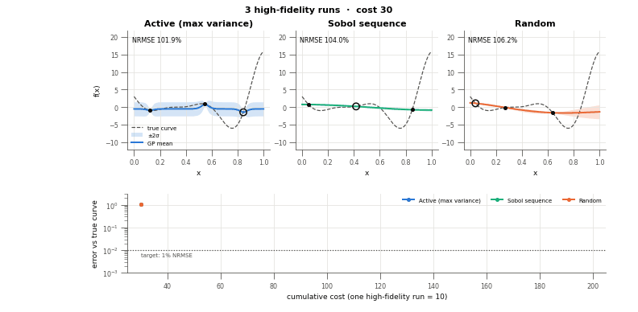
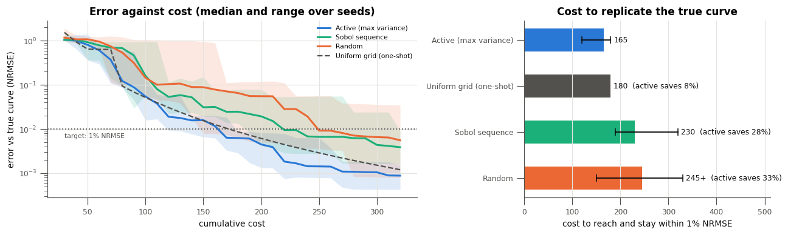

Active Learning: The True Curve for Less¶
Measured on the Forrester benchmark · median of 8 seeds
Every run of a high-fidelity simulator or experiment costs time and money.
Starting from just 3 runs, multioutreg's active learner reproduces the true response curve
for 28% less than a Sobol design and at least 33% less than random
sampling, because it places each new run where the model is still uncertain.
| Design | Runs to 1% error | Cost | Active saves |
|---|---|---|---|
| Active learningnext run where the GP's band is widest | 16.5 (12–18) | 165 | best |
| Uniform gridone-shot; size picked in hindsight | 18 | 180 | 8% |
| Sobol sequencenext point of a scrambled Sobol sequence | 23 (19–32) | 230 | 28% |
| Random samplingnext uniformly random point | 24.5+ (15–32+) | 245+ | ≥ 33% |
Target: the Gaussian-process surrogate stays within 1% NRMSE of the true high-fidelity Forrester curve (on a 400-point grid) for the rest of a 32-run budget. One high-fidelity run costs 10. "+": random sampling missed the target within 32 runs on 2 of 8 seeds, so its true cost is higher. Source: section 3 of the active learning tutorial.
The problem: you pay for every run¶
Surrogate models replace an expensive simulator or experiment with a fast approximation. The approximation is only as good as the runs it was trained on, and those runs are the cost. The usual approach fixes a design up front, a grid, a Latin hypercube or a Sobol set, and runs all of it. That design has two weaknesses:
You must guess the size in advance. Too few runs and the surrogate is wrong; too many and you paid for runs you did not need. A grid cannot even be extended without moving every point.
It treats every region the same. A flat, easy region gets as many runs as a steep, curved one, although the easy region was already well predicted after two or three.
Active learning removes both. It starts small, fits a surrogate, asks the surrogate where it is least certain, runs the simulator there, and repeats until the surrogate is good enough.
Watch it learn¶
The animation starts all three sequential designs from 3 runs of the high-fidelity
Forrester function, (6x − 2)² sin(12x − 4), and adds one run per frame. Each panel shows
the true curve (dashed), the Gaussian-process mean, its ±2σ confidence band, and the newest
run (circled). The lower panel tracks each design’s error against the cumulative cost.

Watch where the circled runs land. The active learner goes to the widest part of its own band, so after a few runs it works almost entirely on the steep right-hand side, the minimum near x ≈ 0.76 and the rise to x = 1, and leaves the flat left half alone. Sobol keeps spreading runs evenly, so half its budget refines a region that was already right. Random points cluster and leave gaps, and the band stays wide inside them.
The evidence: eight seeds, same answer¶
One seed is an anecdote. Repeating the study over 8 seeds (left: median and range of the error; right: cost to reach and stay within 1%):

Two things stand out besides the median saving:
The spread is smaller. Active learning needed 12 to 18 runs on every seed. Sobol needed 19 to 32, and random sampling did not reach the target within 32 runs on 2 seeds. A predictable cost is easier to budget for.
Its error keeps falling. Past the target, the active learner’s error drops another order of magnitude (to about 0.1%) within the same budget, while Sobol and random level off at 0.4% to 0.6%.
Why it wins¶
It spends runs where the error is
The GP's ±2σ band is widest where the data do not yet pin the function down. Sampling there removes the most uncertainty per run, and the band shrinks fastest exactly where it matters.
It grows one run at a time
No design size to guess. Each run builds on the last, so a study can stop the moment it is good enough, and a budget increase never wastes the runs already made.
It tells you when to stop
The confidence band is a running estimate of the remaining error. When it is narrow everywhere you care about, further runs buy little; a fixed design gives no such signal.
The same idea pays off further¶
Max variance is the simplest acquisition. The same ask / tell loop, with an acquisition
chosen for the job, gives larger savings in the other studies of the tutorial and the
cost savings page:
Goal |
Best tool in |
Compared with |
Measured result |
|---|---|---|---|
Find a design’s optimum (Branin, 2 inputs) |
|
random search |
35x fewer runs to the same gap; at 30 runs the gap is 0.017 against 0.89 |
Find a design’s optimum (Hartmann-3, 3 inputs) |
|
random search |
33x fewer runs; at 40 runs the gap is 0.009 against 0.095 |
Global surrogate with a cheap low-fidelity model (Currin) |
|
active learning on the high fidelity only |
3.6x cheaper to NRMSE 0.1; 3.5x lower error at a budget of 300 |
Global surrogate with a cheap low-fidelity model (Park, 4 inputs) |
|
active learning on the high fidelity only |
1.5x cheaper to NRMSE 0.01; 3.2x lower error at a budget of 500 |
Global surrogate with two outputs on different scales (Branin–Currin) |
|
Sobol / random, 30 runs |
NRMSE 0.159 against 0.218 / 0.197 |
Choose the right tool¶
An accurate surrogate everywhere
ActiveLearner(acquisition="max_variance").
Multi-output problems are standardized per output automatically.
The best design, not the whole curve
ActiveLearner(acquisition="ei") or
"ucb"; use weights= to optimize a weighted sum of outputs.
A cheap, correlated model exists
MultiFidelityActiveLearner with
per-level costs. It checks the correlation on high-fidelity data and keeps at least 25% of the
spend there.
Several runs at once
batch_size=q: the batch is spread out by
local penalization instead of piling onto one peak.
A model with no native uncertainty
Wrap it in CommitteeSurrogate
to use bootstrap disagreement as the uncertainty.
Adopt it without changing your pipeline¶
Only the design-of-experiments step changes. The simulator does not need to be Python: the
learner exposes the loop as ask / tell, so existing job scripts and schedulers stay as
they are.
from multioutreg.active import ActiveLearner
from multioutreg.surrogates import GaussianProcessSurrogate
learner = ActiveLearner(GaussianProcessSurrogate, bounds, acquisition="max_variance")
X = learner.initial_design(3)
learner.tell(X, run_simulator(X)) # your existing job submission
for _ in range(budget):
X = learner.ask() # where the model is least certain
learner.tell(X, run_simulator(X))
mean, std = learner.fit().predict(X_check, return_std=True)
if 2 * std.max() < tolerance: # the band is narrow everywhere: stop
break
surrogate = learner.fit() # an ordinary multioutreg estimator
The fitted surrogate works with the rest of the package: score it with the performance metrics, add conformal prediction intervals, or export an HTML report.
When it does not pay¶
The savings above are measured, not promised. They shrink in some situations:
Smooth, stationary problems with a loose target. A GP’s variance depends mostly on where the data are, so max-variance sampling is itself close to a space-filling design. In the tutorial’s 2- to 4-input comparisons at fixed budgets, it ends ahead on Branin, Branin–Currin and Ishigami but level with Sobol on Hartmann-3. The gains are largest when the target is tight and the response has localized features.
A grid sized in hindsight. On a 1-D function, an evenly spaced grid of exactly the right size is only 8% more expensive. In practice the right size is unknown, and a grid’s size grows as
k^dwith the number of inputs.Cheap simulators. If a run takes seconds, the loop’s own overhead (refitting the GP after every run) can exceed the savings.
Weak low-fidelity models. Multi-fidelity learning helps only when the cheap model is informative; on 1-D Forrester, high-fidelity active learning alone was better.
Reproduce it¶
Every number on this page comes from the active learning tutorial (section 3 for the table, animation and cost chart; the later sections for the other studies) and the cost savings tutorial. Re-run them with your own benchmark, target or seeds; the design behind the loop is described on the active learning plan page.